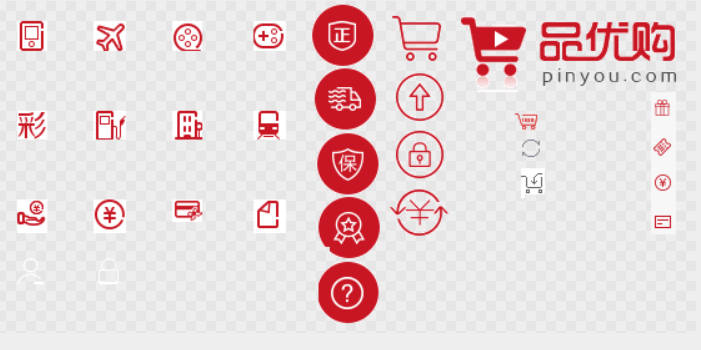
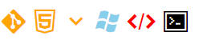

前端学习-css-02-高级
精灵图

目的 :减少接收发送请求的次数(指数据的收发)
使用核心 :
(1) 小背景集合到大图片当中
(2) 大图片称为sprites(精灵图/雪碧图)
(3) 涉及:background-position ==> 右下为正,左上为负(也就是说，通过背景图定位来控制小部件的背景图位置)
(4) 精确测量每个小背景图片的大小和位置 ==> 工具:FW,PS等
字体小图标

- 说明 :字体图标可以为前端工程师提供一种方便高效的图标使用方式，展示的是图标，本质属于字体.
2.css格式:下面再补充
3.优点:
轻量级 :一个图标字体要比一系列的图像要小。一旦字体加载了，图标就会马上渲染出来，减少了服务器请求
灵活性 :本质其实是文字，可以很随意的改变颜色、产生阴影、诱明效果、旋转等
兼容性 :几乎支持所有的浏览器，可以放心使用
注意 :字体图标 不能替代 精灵技术，只是对工作中图标 部分技术 的提升和优化4.总结:
结构样式 复杂 => 精灵图
结构样式 简单 => 字体图标
5.下载字体图标库站点:
http://www.iconfont.cn/ ==>阿里巴巴的矢量图标库
6.使用方法:
iconmoon app ==>
在网站选定图标,点击下面三列菜单的最右列下载,跳转到带有小方块的页面,先不要退出
打开下载完成的压缩包文件,将fonts文件夹放到网页根目录下
打开压缩包内的.css文件,将第一个大括号在内的内容声明拷贝到网页(带着@的那个)
在网页文件内需要使用时,将声明当中的”font-family: ‘icomoon’;”放到对应的盒子当中
最后,把资源网页需要的图标旁边对应的方块图标复制下来,放到自己的网页上去就行了.(当然,也可以打开demo.html) ==>虽然看起来方块是一样的,实际上内容完全不同,使用的时候得注意.
7.追加的新图标的办法:
点击网站左上角“Import Icons”打开json文件导入,点击下面更多的图标进行图标追加,最后再次点击“Generate Font F”进行下载更新,替换源文件即可.
/* 字体声明 */ |
CSS三角做法
css做三角的思维其实非常简单，只需要内边距+内容部分为0时，盒子就只剩下边框了。剩下的边框就如下图那样，稍作调整就能整除个独立的三角形。
集合好下面的css，赋值给一个类或者id，放到网页就能显示出来了。
/* 当盒子没宽高后,就剩下边框了. */ |
CSS用户界面相关样式
说明:更改一些用户操作样式
鼠标样式
1.CSS格式:
cursor:属性值==> 在特定盒子检索,切换鼠标的预定义样式，这里只做简述。2.属性值说明:
default 小白箭头 默认
pointer 小手
move 移动
text 文本
not-allowed 禁止
表单的轮廓线
如果没什么修饰直接点击文本框时,文本框会默认带上轮廓线
==> 取消轮廓线的方法: outline :none;
文本域拖拽问题
resize:none; >> 消除文本域的右下角拖拽块
设置元素居中对齐
0. 属性名：vertical-align
1. 说明:设置表单/图片 和文字的居中对齐 ==>针对于行内元素/行内块元素设置一个元素的居中对齐方式
2. 属性值(所有的线都是横线,没有竖线)
baseline 默认把元素放在父元素的基线上 ==>基线 字母a的底部(默认)
top 把元素的顶端与行内元素最高的顶端对齐 ==>顶线 字符最顶
middle 把元素放置在父元素的中部 ==> 中线 字符中央
bottom 把元素的顶端与行中最低的元素的顶端对齐 ==>底线 文字最底
3.解决文字底部空白缝隙的bug ==> 只要对齐不要基线对齐就行/或者display:block;(转为块?不推荐.)
溢出文字省略号显示
1.单行文本溢出显示省略号---必须满足三个条件
//1.先强制一行内显示文本
white-space:nowrap;(默认normal自动换行)
//2.超出的部分隐藏
overflow:hidden;
//3.文字省略号代替超出的部分
text=overflow:ellipsis;
2.多行文本溢出(了解) ==> 推荐后台人员来设置这个效果,因为他们能控制字数显示多少
有较大的兼容性问题,适用webKit浏览器或移动端
overflow: hidden;
text-overflow: ellipsis;
弹性伸缩盒子模型显示
display: -webkit-box;
限制在一个块元素显示的文本的行数
-webkit-line-clamp: 2;
设置或检索伸缩盒对象的子元素的排列方式
-webkit-box-orient: vertical;
布局技巧
1.margin负值
使用margin-left:-1px;可以使两边边框合并为1,使得边框加和不会出现1+1=2的效果(简单来讲,盒子压盒子)
==>细线边框效果
2.文字围绕浮动元素
利用浮动元素不会压住文字的特性
3.行内块元素的巧妙运用
利用行内块的自带间距/可调大小来控制底部类似于导航栏的换页按钮排布
4.三角强化
妥当的控制三角的边关系,以达到控制三角的形状
也就是在前面三角的基础上,对边进行控制即可
网页初始化样式
每个网页都需要使用CSS进行样式的初始化
/* 清除所有标签的内外边距 */ |
 wechat
wechat alipay
alipay


微信号：无
QQ：无
--------------------------------每日更新指南：
刷题/记录总知识一般会沿用上次的文档
学习新知将新开文档